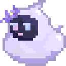

2025/10/23 から手動で記録しています。(微~中課金)
「平均増加」に関しては 前日比=増加 分のみ考慮し、ガチャを引いて減少した日のデータは除外しています。
総回転数: 0 回
紡がれた運命: 0 個
原石: 0 個
平均増加: 0.00 回/日
総回転数: 0 回
チケット: 0 枚
星玉: 0 個
平均増加: 0.00 回/日
総回転数: 0 回
ﾏｽﾀｰﾃｰﾌﾟ: 0 個
ﾎﾟﾘｸﾛｰﾑ : 0 個
平均増加: 0.00 回/日
260324_0313